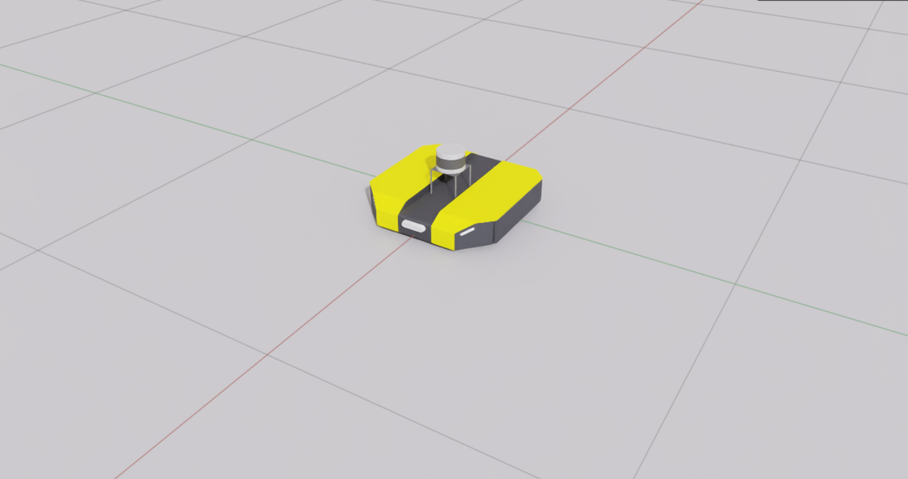
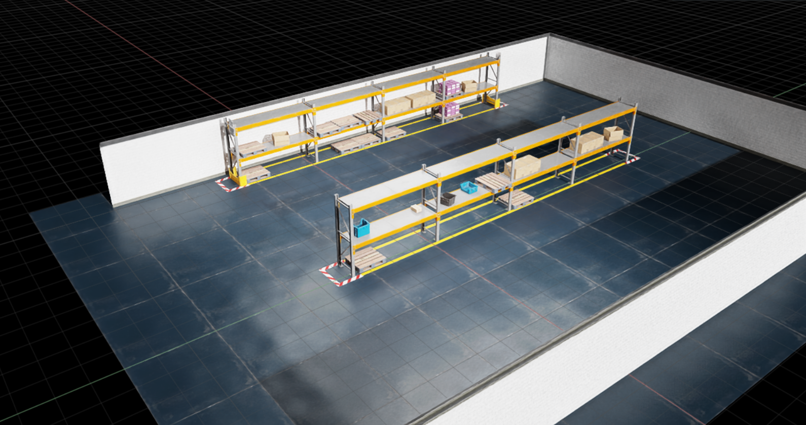

Preparing USD assets
Prerequisite
Introduction
Suppose we want to simulate three autonomous mobile robots (AMRs) driving through a warehouse. To create this simulation with Isaac IMI, we first need to prepare our assets.
Isaac Sim uses the Universal Scene Description (USD) file format to describe assets in the simulation. Thus, the two assets you need are:
- A
.usdfile describing each robot you want to add to the simulation (in this tutorial, the AMR) - A
.usdfile describing the static environment that your robots will be spawned in (in this tutorial, the warehouse)
Note
Each custom robot in the simulation requires its own USD file. For example, if you want to simulate three AMRs and two Unitree Go2 robots, you'll need two .usd files: one that describes the AMR and one that describes the Unitree Go2.
Prepare a USD for each custom robot you want to use in simulation
There are many ways to obtain a .usd file for your robot:
- Design your robot using the Isaac Sim GUI and export it as a
.usdfile - Design your robot in a software of your choice and export it to a
.usdfile. Many softwares support OpenUSD. - If you have a URDF, MJCF XML, or CAD file for your robot, you can use the Isaac Sim import tools
The Isaac Sim documentation provides a create guide for how to set up your assets for simulation, including how to use the import tools and rigging the robot. As this process is already documented, we won't cover it here.
This tutorial will use the Clearpath Dingo robot. The .usd file for the robot is located in isaacimi/examples/robots/clearpath_dingo.usd.

Warning
This .usd file should only contain the robot you want to spawn in the simulation. Although nothing is stopping you from doing so, do not add additional prims or logic such as action graphs to your .usd file. As a best practice, we recommend adding logic to your robots via robot plugins.
Prepare a USD for the environment you want to use in simulation
You can obtain a .usd file for the environment the same way you would for your robot.
If using the Isaac Sim GUI, the Isaac Sim documentation provides some helpful guides:
- Environment Setup – walks through how to create an environment in Isaac Sim
- Add Simple Objects – walks through how to add objects to the scene
This tutorial will use a simple warehouse environment created with existing assets from Isaac Sim. The .usd file for the warehouse is located in isaacimi/examples/environments/warehouse_two_shelves.usd.
Warning
This .usd file should contain only the static evironment you want to spawn your robots in. Although nothing is stopping you from doing so, do not add robots or logic such as action graphs to your .usd file.

Summary
After this step, you should now have a .usd file describing the AMR you want to simulate and a .usd file describing the warehouse that the AMRs will be spawned in.
Tip
Remember, you can make your assets modular. For example, your warehouse may contain items such as pallets, boxes, and shelves. Each of these items can be created in their own .usd file, and your warehouse .usd file can reference each item multiple times.